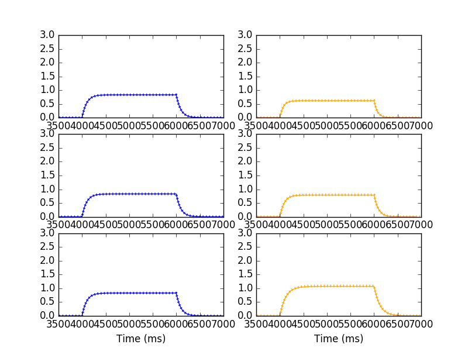

This is the readme for the model associated with the paper:
Huang S, Hong S, De Schutter E (2015) Non-linear leak currents affect
mammalian neuron physiology. Front Cell Neurosci 9:432
This model was contributed by Dr. S. Hong.
To run check that a recent version of NEURON (available at
www.neuron.yale.edu) with python and mpi is installed. Then compile
the mod files with nrnivmodl, (or mknrndll on mac or pc). Finally
run the simulation with a command like
python fig1_run.py
Then display the results which are similar to Fig 2A in the paper with a command like:
python fig1_show.py
which should generate a figure like:

Changelog
2022-12: Migrate to python3 (via 2to3 -w .)